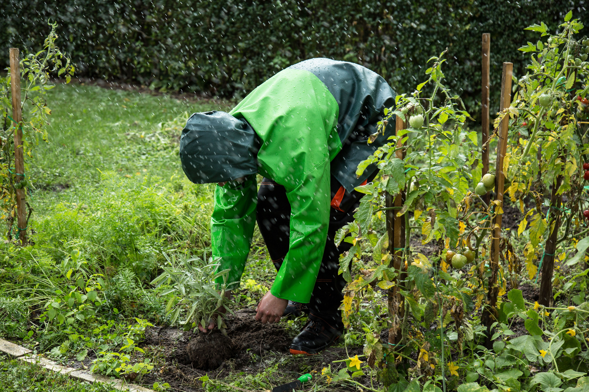

Growing quality produce and building a healthier community.

Wambui's Farm is an agricultural business dedicated to growing and supplying fresh, high-quality farm products to families and businesses.
To provide fresh, affordable and high-quality farm produce while promoting sustainable agriculture.
To become a trusted agricultural supplier and contribute to food security in our community.
We focus on crop production, harvesting, and supplying farm produce to our customers. We aim to maintain high standards throughout the farming process.
Contact Our Farm